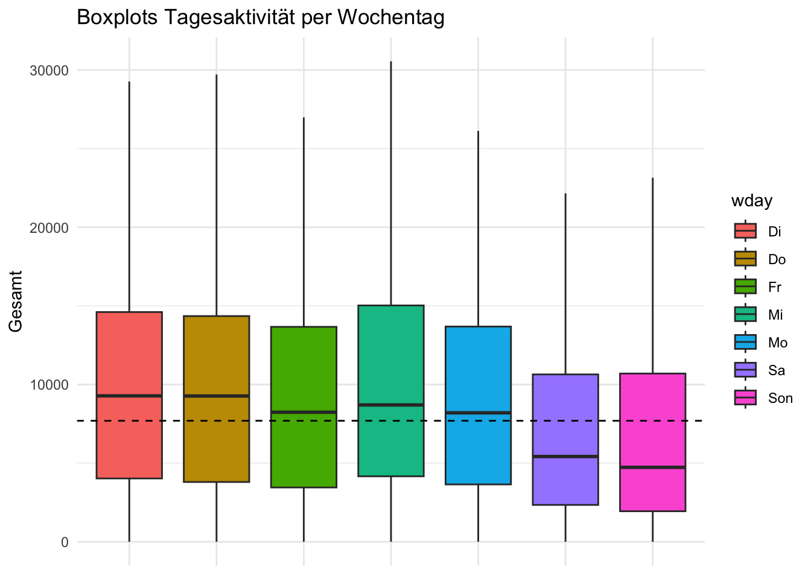
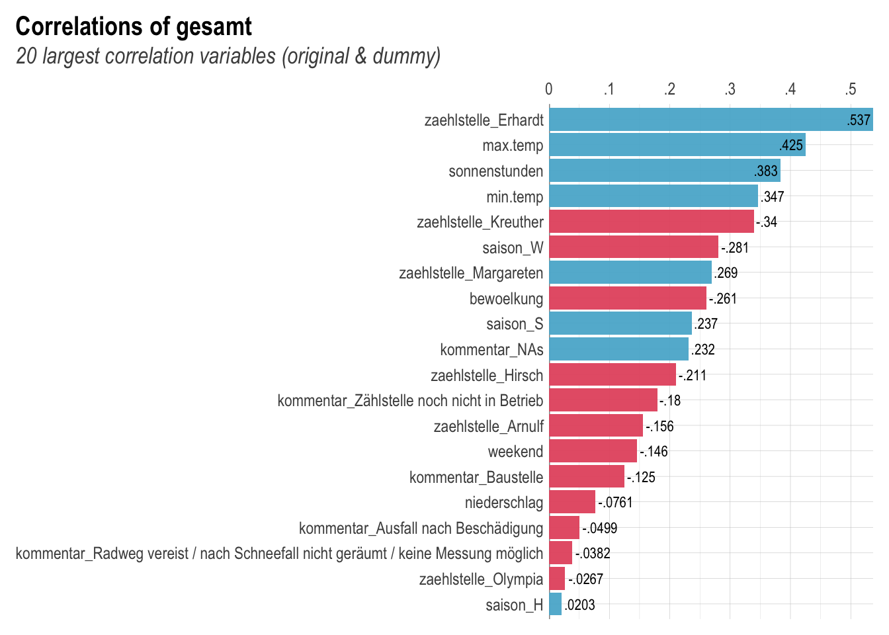

library(tidyverse)
library(here)
library(lares)
library(paletteer)
library(kableExtra)
library(mapview)
library(ggpubr)
library(GGally)
library(janitor)
library(jtools)
library(Rfssa)
options(dplyr.summarise.inform = FALSE)
load_github_data("https://github.com/TxominBasterraChang/txos_blog/blob/main/Data/Bike_Munich/ML_data.Rda")Auf dem Open Data Portal der Stadt München finden sich viele interessante Datensätze zu allen Möglichen Themen. Auf diesem befinden sich unteranderem die Daten der Raddauerzählstellen, welche eine herausragende Möglichkeiten bieten einen Einblick in die Fahrradaktivität in der Stadt München zu erlangen.
Die Observationen werden an verschiedenen, innerhalb der City verteilten Zählstationen getätigt. Dabei wird im 15 Minuten Tackt gezählt wie viele Fahrradfahrerinnen innerhalb dieser Zeitspanne an der jeweilige
Bei dem Datensatz, den ich in dieser Analyse vorstellen werde handelt es sich um Tageswerte. Dabei werden die 15 minütigen Messungen auf den Tag kumuliert. Dieser Datensatz beinhalten neben der Fahrrad-Tagesaktivität auch Wetterdaten, wie etwa die Temperatur oder Sonnenstunden. Die Zeitreihe beginnt im Juni 2008 und läuft bis Dezember 2022.
Datensatz
Die Daten aus dem Portal sind bereits sauber aufbereitet. Die CSV-Dateien sind jährlich vorhanden und müssen lediglich vor der Analyse in ein großes Dataframe zusammengebastelt werden.
Da es sich um eine Zeitreihe handelt, habe ich in dem Datensatz noch die Variablen Jahreszeiten (saison), Wochentage (wday) und Wochenenden (weekend) beigefühgt.
data %>%
head(10) %>%
kable(caption = "Hauptdatensatz", center = TRUE) %>%
kable_styling(bootstrap_options = "striped", font_size = 12) %>%
kable_paper("hover", full_width = F)| datum | zaehlstelle | gesamt | min.temp | max.temp | niederschlag | bewoelkung | sonnenstunden | na | kommentar | saison | wday | weekend |
|---|---|---|---|---|---|---|---|---|---|---|---|---|
| 2008-06-01 | Arnulf | 667 | 12.5 | 26.7 | 0.0 | 30 | 13.9 | NA | NA | S | 1 | 1 |
| 2008-06-02 | Arnulf | 1117 | 15.0 | 27.9 | 0.6 | 44 | 12.1 | NA | NA | S | 2 | 0 |
| 2008-06-03 | Arnulf | 1279 | 14.6 | 21.9 | 0.2 | 88 | 3.2 | NA | NA | S | 3 | 0 |
| 2008-06-04 | Arnulf | 758 | 14.8 | 21.9 | 5.1 | 91 | 1.4 | NA | NA | S | 4 | 0 |
| 2008-06-05 | Arnulf | 606 | 14.0 | 20.4 | 14.2 | 91 | 0.6 | NA | NA | S | 5 | 0 |
| 2008-06-06 | Arnulf | 963 | 13.6 | 19.9 | 10.0 | 81 | 1.7 | NA | NA | S | 6 | 0 |
| 2008-06-07 | Arnulf | 399 | 13.6 | 18.2 | 2.0 | 95 | 0.7 | NA | NA | S | 7 | 1 |
| 2008-06-08 | Arnulf | 557 | 12.6 | 22.0 | 3.9 | 83 | 5.4 | NA | NA | S | 1 | 1 |
| 2008-06-09 | Arnulf | 1244 | 9.5 | 23.0 | 0.0 | 63 | 11.5 | NA | NA | S | 2 | 0 |
| 2008-06-10 | Arnulf | 1350 | 12.2 | 25.7 | 0.8 | 48 | 12.7 | NA | NA | S | 3 | 0 |
In der Tabelle finden sich Information zur Fahrrad-Tagesaktivität pro Zählstation, Störungen im Betrieb, außerdem Daten zur Wetterlage in München.
Fahrradaktivität
Verschaffen wir uns erst einmal einen Überblick über die Gesamtaktivität.
data %>%
group_by(datum) %>%
summarise(Gesamt = sum(gesamt),
Min.temp = mean(min.temp),
saison = saison) %>%
distinct() %>%
ggplot(aes(x = datum, y = Gesamt, color = saison)) +
geom_point(shape = 4, size = 0.7) +
geom_smooth(se = FALSE, size=0.7) +
ggtitle("Jahresentwicklung") +
theme_minimal() +
theme(axis.title.x=element_blank())Wir können klar sehen, dass die Aktivität mit den Jahren zunimmt und eine zyklische Entwicklung aufweist: Die Aktivität steigt über das Jahr hinweg an und ebbt zum Ende wieder ab. Wie zu erwarten, fällt die Aktivität im Winter geringer aus als im Sommer. Die Messzahlen scheinen sich für den Herbst und Frühling jedoch zu ähneln.
data %>%
group_by(datum) %>%
summarise(Gesamt = sum(gesamt),
saison = saison) %>%
ggplot(aes(x = Gesamt)) +
geom_histogram(bins = 50, color = "orange", fill = "white") +
facet_wrap(~ saison) +
theme_minimal() +
ggtitle("Aktivitätsverteilung") Die obige Grafik beschreibt die Verteilung der Aktivität nach Jahreszeit. Für die wärmeren Jahreszeiten ist die Verteilung etwas gestreckter, was bedeutet, dass es in ähnlichem Maße Tage mit viel aber auch wenig Aktivität gibt. Im Winter ist das Profil rechtsschief. D.h. dass es viele Tage gibt, an welchen keine oder wenig Aktivität bei Zählstationen gemessen wurde.
Fahrradaktivität nach Zählstationen
München hat 6 Zählstation, welche über die Stadt verteilt sind. Wir sehen in der unteren Karte, dass die Stationen alle mehr oder weniger zentral gelegen sind. Nicht alle Stationen haben im selben Jahr angefangen zu messen. Mehr Informationen lassen sich durch das Klicken auf die Punkte herausfinden.
load_github_data("https://github.com/TxominBasterraChang/txos_blog/blob/main/Data/Bike_Munich/data_zaehl.Rda")
mapview(data_zaehl, zcol = "zaehlstelle") Die untere Grafik zeigt auf wie sich die Aktivität der verschiedenen Stationen über die Jahre entwickelt hat. Wie bei der Gesamtaktivität lässt sich auch bei den meisten Zählstationen ein zyklisches Wachstum beobachten. Auffällig sind die Frequenzunterschiede zwischen den Stationen. In manchen ist scheint die Aktivität durchgehend höher zu sein als in anderen.
data %>%
group_by(datum, zaehlstelle) %>%
summarise(Gesamt = sum(gesamt),
Min.temp = mean(min.temp),
saison = saison) %>%
distinct() %>%
ggplot(aes(x = datum, y = Gesamt, color = zaehlstelle)) +
facet_wrap(~ zaehlstelle, ncol = 3) +
geom_line() +
ggtitle("Jahresentwicklung") +
theme_minimal() +
theme(axis.title.x=element_blank())Ebenfalls interessant sind Ausreißer wie etwa bei der Zählstation Olympia (zwischen den Jahren 2012 und 2015). Diese sind vermutlich durch das 24h Mountain Bike Rennen im Olympia Park erzeugt worden (Eine Analyse dazu findet sich in SOMTOMS Blog).
Das Gesamtaktivitätsprofil lässt sich auch gut mit Boxplots darstellen. Die horizontal schraffierte Linie stellt den Gesamtmedian dar. Erhardt und Margareten sind die Stationen mit der höchsten Aktivität, deren Aktivität deutlich über dem Populationsmedian liegt.
Median <- data %>%
summarise(Median = median(gesamt))
Median <- Median$Median
data %>%
group_by(zaehlstelle) %>%
ggplot(aes(x = zaehlstelle, y = gesamt, fill = zaehlstelle)) +
geom_boxplot() +
geom_hline(yintercept = Median, linetype="dashed", color = "black") +
theme_minimal() +
theme(axis.title.x=element_blank(),
axis.text.x=element_blank(),
axis.ticks.x=element_blank()) +
ggtitle("Boxplots Tagesaktivität per Zählstelle") Wochentage
data %>%
group_by(datum) %>%
summarise(Gesamt = sum(gesamt),
wday = wday) %>%
mutate(wday = case_when(wday == 1 ~ "Son",
wday == 2 ~ "Mo",
wday == 3 ~ "Di",
wday == 4 ~ "Mi",
wday == 5 ~ "Do",
wday == 6 ~ "Fr",
wday == 7 ~ "Sa")) %>%
distinct() %>%
ggplot(aes(x = wday, y = Gesamt, fill = wday)) +
geom_boxplot() +
geom_hline(yintercept = 7693, linetype="dashed", color = "black") +
theme_minimal() +
theme(axis.title.x=element_blank(),
axis.text.x=element_blank(),
axis.ticks.x=element_blank()) +
ggtitle("Boxplots Tagesaktivität per Wochentag") 
Am Wochenende wird weniger Aktivität gemessen. Die Wochenend-mediane liegen unterhalb des Gesamtmedian. Mehr Informationen über die tägliche und Wöchentliche Fahrradaktivität finden sich in dieser Shiny App.
Beeinträchtigung
In den Daten finden sich Informationen über Störungen und Beeinträchtigungen des Betriebs. Die untere Tabelle zeigt auf, dass in 93% aller Tage keine Beeinträchtigungen gemeldet wurde.
data %>%
rename(Beeinträchtigung = na) %>%
mutate(Beeinträchtigung = case_when(Beeinträchtigung == "N/A" ~ "Ja",
Beeinträchtigung != "N/A" ~ "Nein")) %>%
tabyl(Beeinträchtigung) %>%
select(-valid_percent) %>%
kable(caption = "Anteil der Störfälle", digits = 3, center = TRUE) %>%
kable_paper("hover")| Beeinträchtigung | n | percent |
|---|---|---|
| Ja | 1969 | 0.066 |
| NA | 27712 | 0.934 |
Unter den Beeinträchtigungen finden sich verschiedene Klassifikationen, wobei “Zählstelle noch nicht in Betrieb” und “Baustelle” die häufigsten beeinträchtigungs Gründe darstellen. Für 10% der Beeinträchtigung gibt es keine Klassifizierung.
data %>%
mutate(kommentar = ifelse(is.na(na) == FALSE & is.na(kommentar) == TRUE, "Unklassifiziert", kommentar)) %>%
rename(Kommentar = kommentar) %>%
drop_na() %>%
tabyl(Kommentar) %>%
arrange(desc(n)) %>%
kable(caption = "Störungstypen", digits = 3, center = TRUE) %>%
kable_paper("hover")| Kommentar | n | percent |
|---|---|---|
| Zählstelle noch nicht in Betrieb | 1028 | 0.522 |
| Baustelle | 593 | 0.301 |
| Unklassifiziert | 216 | 0.110 |
| Ausfall nach Beschädigung | 82 | 0.042 |
| Radweg vereist / nach Schneefall nicht geräumt / keine Messung möglich | 48 | 0.024 |
| Austausch Sensor | 2 | 0.001 |
Die Beeinträchtigungen im Betrieb können auch zeitlich je Zählstelle untersucht werden.
data %>%
mutate(kommentar = ifelse(is.na(na) == FALSE & is.na(kommentar) == TRUE, "NA", kommentar)) %>%
drop_na() %>%
ggplot(aes(x = datum, y = kommentar, color = zaehlstelle )) +
geom_point(shape = 15, size = 2) +
theme_minimal() +
labs(title = "Beeinträchtigung im Betrieb") +
xlab("Datum") +
theme(axis.title.x=element_blank(),
axis.title.y=element_blank()) Wetter Daten
Die Jahreszeiten scheinen stark mit der Tagesaktivität in Verbindung zu stehen. Um dies genauer zu untersuchen ist es sinnvoll sich die Verteilung Wetter-Variablen genauer anzuschauen.
p1 = data %>%
ggplot(aes(x = min.temp)) +
geom_histogram(aes(y=..density..), color="#B99095", fill="white", bins = 100) +
geom_density(color="#B99095") +
theme_minimal()
p2 = data %>%
ggplot(aes(x = max.temp)) +
geom_histogram(aes(y=..density..), color="#FCB5AC", fill="white", bins = 100) +
geom_density(color="#FCB5AC") +
theme_minimal()
p3 = data %>%
ggplot(aes(x = niederschlag)) +
geom_histogram(aes(y=..density..), color="#2D1674", fill="white", bins = 100) +
geom_density(color="#2D1674") +
theme_minimal()
p4 = data %>%
ggplot(aes(x = bewoelkung)) +
geom_histogram(aes(y=..density..), color="#3D5B59", fill="white", bins = 100) +
geom_density(color="#3D5B59") +
theme_minimal()
p5 = data %>%
ggplot(aes(x = sonnenstunden)) +
geom_histogram(aes(y=..density..), color="#29A0B1", fill="white", bins = 100) +
geom_density(color="#29A0B1") +
theme_minimal()
ggarrange(p1, p2, p4, p5, p3,
ncol = 2, nrow = 3) 
In München scheint es viele Tage mit wenig Regen, wenig Sonne und starker Bewölkung zu geben. Die Temperatur befindet sich meistens zwischen 0-20 Grad.
Wetter und Aktivität
Schauen wir uns die Beziehung zwischen dem Wetter und der Fahrradaktivität an.
p1 = data %>%
group_by(datum) %>%
summarise(Gesamt = sum(gesamt),
Min.temp = mean(min.temp),
saison = saison) %>%
distinct() %>%
ggplot(aes(x = Min.temp, y = Gesamt)) +
geom_point(aes(color = saison), size=0.7) +
geom_smooth() +
theme_minimal()
p2 = data %>%
group_by(datum) %>%
summarise(Gesamt = sum(gesamt),
Max.temp = mean(max.temp),
saison = saison) %>%
distinct() %>%
ggplot(aes(x = Max.temp, y = Gesamt)) +
geom_point(aes(color = saison), size=0.7, show.legend = FALSE) +
geom_smooth() +
theme_minimal()
p3 = data %>%
group_by(datum) %>%
summarise(Gesamt = sum(gesamt),
Niederschlag = mean(niederschlag),
saison = saison) %>%
distinct() %>%
ggplot(aes(x = Niederschlag, y = Gesamt)) +
geom_point(aes(color = saison), size=0.7, show.legend = FALSE) +
geom_smooth() +
theme_minimal()
p4 = data %>%
group_by(datum) %>%
summarise(Gesamt = sum(gesamt),
Bewoelkung = mean(bewoelkung),
saison = saison) %>%
distinct() %>%
ggplot(aes(x = Bewoelkung, y = Gesamt)) +
geom_point(aes(color = saison), size=0.7, show.legend = FALSE) +
geom_smooth() +
theme_minimal()
p5 = data %>%
group_by(datum) %>%
summarise(Gesamt = sum(gesamt),
Sonnenstunden = mean(sonnenstunden),
saison = saison) %>%
distinct() %>%
ggplot(aes(x = Sonnenstunden, y = Gesamt)) +
geom_point(aes(color = saison), size=0.7, show.legend = FALSE) +
geom_smooth() +
theme_minimal()
ggarrange(p1, p2, p4, p5, p3,
ncol = 2, nrow = 3, common.legend = TRUE)Min und Max Temperatur sind positiv mit der Aktivität assoziiert. Das Verhältnis scheint dabei linear zu sein. D.h. dass eine Temperaturerhöhung um n Grad ungefähr eine Aktivitätssteigerung um x Fahrradfahrerinnen mit sich bringt. Ähnliches gilt für Sonnenstunden. Bei der Bewölkung haben wir eine negative Assoziation.
Auf den ersten Blick scheint die Stärke des Niederschlags keinen besonderen Einfluss auf Fahrradaktivität zu haben. Das liegt vielleicht daran, dass es in München generell wenig regnet und der Trend durch große Regen-Ausreißer verzerrt wird. Beschränken wir die Observation auf das 95% Quantil der Regen Daten.
quantile(data$niederschlag, probs = 0.95)data %>%
group_by(datum) %>%
filter(niederschlag <= 12.1 ) %>%
summarise(Gesamt = sum(gesamt),
Niederschlag = mean(niederschlag)) %>%
distinct() %>%
ggplot(aes(x = Niederschlag, y = Gesamt)) +
geom_point(shape = 15, size = 2) +
geom_smooth() +
theme_minimal() +
labs(title = "Niederschlag und Aktivität",
subtitle = "Beschränkt auf das 95% Quantil")Bei kleinen Werten scheint es einen leichten negativen Trend zu geben. Allgemein betrachtet ist der Trend jedoch schwachen.
Korrelationen
Um den Überblick über den Datensatz abzuschließen schauen wir uns noch die Korrelationen zwischen den Variablen an. Dieser Schritt kann für spätere Modellvierungen besonders wichtig werden.
data %>%
select(gesamt, min.temp, max.temp, niederschlag, bewoelkung, sonnenstunden, saison) %>%
ggcorr(label = TRUE, label_size = 2, label_color = "white") +
scale_fill_paletteer_c("viridis::plasma") +
labs(title = "Correlations (Numeric Variables)")Wir sehen, dass min.temp und max.temp stark korreliert sind. Da wir keine zu starken Korrelationen zwischen unseren Features haben wollen, sollten wir eine dieser Variablen beim modellieren entfernen.
data %>%
corr_var(gesamt)
Interessant ist besonders, welche Variablen in welchem Grad zum Aktivitätsvolumen beitragen. Die obige Grafik zeigt auf, dass die Zählstelle Erhardt den größten positiven Impakt auf die Aktivität hat. max.temp und sonnenstunden sind ebenfalls sehr wichtig. Wenn die Aktivität in der Zählstelle Kreuther gemessen wurde, dann ist die Chance relativ groß, dass die Aktivität nicht besonders hoch ausgefallen ist.
Wie bereits oben erwähnt scheint der Niederschlag keine bedeutende Rolle für die gemessene Fahrradmobilität zu spielen.
Regression
Ein einfaches Model für das Verständnis der Einflussfaktoren ist die lineare Regression:
model <- lm(gesamt ~ min.temp + niederschlag + bewoelkung + sonnenstunden + wday, data = data )plot_summs(model)Wir sehen, dass die Sonnenstunden den größten Einfluss auf die Tagesaktivität hat. Noch größer als die Temperatur. Je sonniger es in München ist, desto mehr wird an den Stationen gemessen.
Interessanterweise scheint Niederschlag nun einen signifikanten negativen Einfluss auf die Aktivität zu haben. Das dieses Verhältnis vorher nicht aufgefallen ist mag vielleicht daran gelegen haben, dass Niederschlag positiv mit dem positiven Einflussfaktor Temperatur korreliert ist und der negative Effekt dadurch übertüncht wurde.